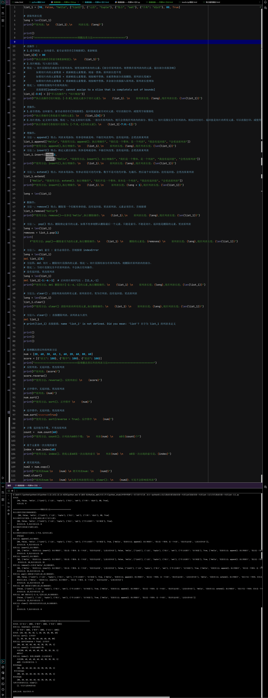

列表list——方法
课堂笔记
- 列表的方法主要是：列表的(增操作以及删操作)
- 列表的改操作和查操作已经学完：
改操作：(列表名[索引] = 新值[索引必须小于容器长度，否则报错])
查操作1：(列表名[索引][索引必须小于容器长度，否则报错])
查操作2：(列表名[切片][具体返回值以切片决定]) -
关于增操作的方法
-
append()
- 在列表末尾添加一个元素
- 语法：
列表名.append(元素) -
注意
- 添加的是单个元素
- 所以：如果传参的是：列表、字典、元组、集合都视为一个元素，是一个整体放入列表末尾
-
示例：
s = [50, 30, 60, 80]s.append([80,70])print(s)
最后的结果是：[50, 30, 60, 80, [80, 70]] - 该方法没有返回值，是直接更改原列表。
-
insert()
- 在指定索引位置插入一个元素
- 语法：
列表名.insert(索引, 元素) -
注意
- 添加的是单个元素
- 所以：如果传参的是：列表、字典、元组、集合都视为一个元素，是一个整体放入列表末尾
- 与
append()的唯一区别就是指定索引插入 -
示例：
s = [50, 30, 60, 80]s.insert(2,{"方法":“insert()”})print(s)
最后的结果是：[50, 30, 60, {"方法":“insert()”}, 80] - 该方法没有返回值，是直接更改原列表。
-
extend()
- 在末尾添加多个个元素
- 语法：
列表名.extend(元素) -
注意
- 可以添加多个元素
- 方法操作流程：遍历元素，逐个末尾添加
-
所以：当传参的是：列表、字典、元组、集合... 任何可迭代对象时，就与
append()有了本质区别 -
- 列表：列表内元素被迭代，逐个插入指定列表
- 字典：字典迭代后返回值默认是：键，所以是键名逐个插入
- 字符串：字符串遍历后，单个字符逐个插入
- 元组和集合与列表一致
- 提前接触字典方法：
values()返回字典所有值、keys()返回字典所有键、items() 返回所有键值对(是不可变的元组)所以：列表.extend(字典.keys()) → 逐个添加键列表.extend(字典.values()) → 逐个添加值列表.extend(字典.items()) → 逐个添加键值对（作为元组）
-
示例：
s = [50, 30, 60, 80]s.extend([50, 60])print(s)
最后的结果是：[50, 30, 60, 80, 50, 60] - 元素必须是可迭代对象(iterable)，数字不是可迭代对象，会直接报错(
TypeError: 'int' object is not iterable) - 与
append()的唯一区别就是append整体插入，extend()先遍历，再逐个插入 - 该方法没有返回值，是直接更改原列表。
-
-
关于删除操作
列表删除元素方法：
del/clear()/remove()/pop()lst = [1, 2, 3, 4, 5]操作 作用 示例 结果 del 列表[索引]删除指定位置的索引 del lst[2][1, 2, 4, 5]del 列表[切片]删除指定范围内的元素 del lst[1:3][1, 4, 5]列表.clear()清空列表所有元素 lst.clear()[]del 列表删除整个列表对象 del 列表列表不再存在 列表.remove()- 移除列表中第一个匹配的值
- 注意会影响原容器长度[更改原列表]
- 如果元素不存在，会抛出 ValueError
lst.remove(4)[1, 2, 3, 5]列表.pop()- 删除列表中指定索引位置的元素
- 如果未指定索引，默认删除最后一个
- 注意：会更改数组长度[更改原列表]
- 只能是索引，不能是切片
- 有返回值：返回值是删除的元素
lst.pop()[1, 2, 3, 4] -
关于列表方法进阶操作 方法 作用 返回值 是否改变原列表 注意事项 index(x)查找元素 x第一次出现的索引整数（索引值） ❌ 不改变原列表 元素不存在时抛出 ValueErrorcount(x)统计元素 x出现的次数整数 ❌ 不改变原列表 不存在时返回 0，不报错sort()对列表进行原地排序 None✅ 改变原列表 - 元素类型必须可比较，否则报错
- 默认升序
- 降序：
列表.sort(reverse = True) - 按要求升序：
列表.sort(key=def,reverse = False)key默认None，reverse默认False - 按要求降序：
列表.sort(key=def,reverse = True)key默认None，reverse默认False
reverse()原地反转列表顺序 None✅ 改变原列表 不排序，只是倒过来 copy()返回列表的浅拷贝 新列表 ❌ 不改变原列表 嵌套列表内部元素共享引用 -
综合实践
